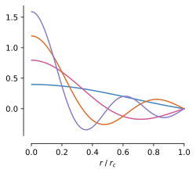
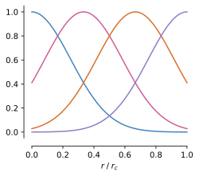
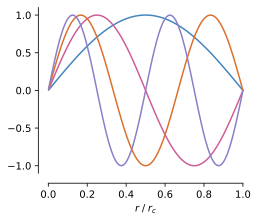
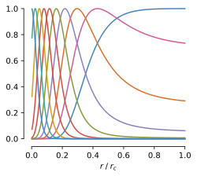

Distance Expansions¶
Available Expansions¶
graph-pes exposes the DistanceExpansion
base class, together with implementations of a few common expansions:
- class graph_pes.models.components.distances.Bessel(n_features, cutoff, trainable=True)[source]¶
Bases:
DistanceExpansionThe Bessel expansion:
\[\phi_{n}(r) = \sqrt{\frac{2}{r_{\text{cut}}}} \frac{\sin(n \pi \frac{r}{r_\text{cut}})}{r} \quad n \in [1, n_\text{features}]\]where \(r_\text{cut}\) is the cutoff radius and \(n\) is the order of the Bessel function, as introduced in Directional Message Passing for Molecular Graphs.
import torch from graph_pes.models.components.distances import Bessel import matplotlib.pyplot as plt cutoff = 5.0 bessel = Bessel(n_features=4, cutoff=cutoff) r = torch.linspace(0, cutoff, 101) # (101,) with torch.no_grad(): embedding = bessel(r) # (101, 4) plt.plot(r / cutoff, embedding) plt.xlabel(r"$r / r_c$")
- Parameters:
- frequencies¶
\(n\), the frequencies of the Bessel functions.
- class graph_pes.models.components.distances.GaussianSmearing(n_features, cutoff, trainable=True)[source]¶
Bases:
DistanceExpansionA Gaussian smearing expansion:
\[\phi_{n}(r) = \exp\left(-\frac{(r - \mu_n)^2}{2\sigma^2}\right) \quad n \in [1, n_\text{features}]\]where \(\mu_n\) is the center of the \(n\)’th Gaussian and \(\sigma\) is a width shared across all the Gaussians.
import torch from graph_pes.models.components.distances import GaussianSmearing import matplotlib.pyplot as plt cutoff = 5.0 gaussian = GaussianSmearing(n_features=4, cutoff=cutoff) r = torch.linspace(0, cutoff, 101) # (101,) with torch.no_grad(): embedding = gaussian(r) # (101, 4) plt.plot(r / cutoff, embedding) plt.xlabel(r"$r / r_c$")
- Parameters:
- centers¶
\(\mu_n\), the centers of the Gaussians.
- coef¶
\(\frac{1}{2\sigma^2}\), the coefficient of the exponent.
- class graph_pes.models.components.distances.SinExpansion(n_features, cutoff, trainable=True)[source]¶
Bases:
DistanceExpansionA sine expansion:
\[\phi_{n}(r) = \sin\left(\frac{n \pi r}{r_\text{cut}}\right) \quad n \in [1, n_\text{features}]\]where \(r_\text{cut}\) is the cutoff radius and \(n\) is the frequency of the sine function.
import torch from graph_pes.models.components.distances import SinExpansion import matplotlib.pyplot as plt cutoff = 5.0 sine = SinExpansion(n_features=4, cutoff=cutoff) r = torch.linspace(0, cutoff, 101) # (101,) with torch.no_grad(): embedding = sine(r) # (101, 4) plt.plot(r / cutoff, embedding) plt.xlabel(r"$r / r_c$")
- Parameters:
- frequencies¶
\(n\), the frequencies of the sine functions.
- class graph_pes.models.components.distances.ExponentialRBF(n_features, cutoff, trainable=True)[source]¶
Bases:
DistanceExpansionThe exponential radial basis function expansion, as introduced in PhysNet: A Neural Network for Predicting Energies, Forces, Dipole Moments and Partial Charges:
\[\phi_{n}(r) = \exp\left(-\beta_n \cdot(\exp(-r_{ij}) - \mu_n)^2 \right) \quad n \in [1, n_\text{features}]\]where \(\beta_n\) and \(\mu_n\) are the (inverse) width and center of the \(n\)’th expansion, respectively.
Following PhysNet, \(\mu_n\) are evenly spaced between \(\exp(-r_{\text{cut}})\) and \(1\), and:
\[\left( \frac{1}{\sqrt{2}\beta_n} \right)^2 = \frac{1 - \exp(-r_{\text{cut}})}{n_\text{features}}\]import torch from graph_pes.models.components.distances import ExponentialRBF import matplotlib.pyplot as plt cutoff = 5.0 rbf = ExponentialRBF(n_features=10, cutoff=cutoff) r = torch.linspace(0, cutoff, 101) # (101,) with torch.no_grad(): embedding = rbf(r) # (101, 10) plt.plot(r / cutoff, embedding) plt.xlabel(r"$r / r_c$")
- Parameters:
- β¶
\(\beta_n\), the (inverse) widths of each basis.
- centers¶
\(\mu_n\), the centers of each basis.
Implementing a new Expansion¶
- class graph_pes.models.components.distances.DistanceExpansion(n_features, cutoff, trainable=True)[source]¶
Abstract base class for an expansion function, \(\phi(r) : [0, r_{\text{cutoff}}] \rightarrow \mathbb{R}^{n_\text{features}}\).
Subclasses should implement
expand(), which must also work over batches:\[\phi(r) : [0, r_{\text{cutoff}}]^{n_\text{batch} \times 1} \rightarrow \mathbb{R}^{n_\text{batch} \times n_\text{features}}\]- Parameters:
- abstract expand(r)[source]¶
Perform the expansion.
- Parameters:
r (torch.Tensor) – The distances to expand. Guaranteed to have shape \((..., 1)\).
- Return type: